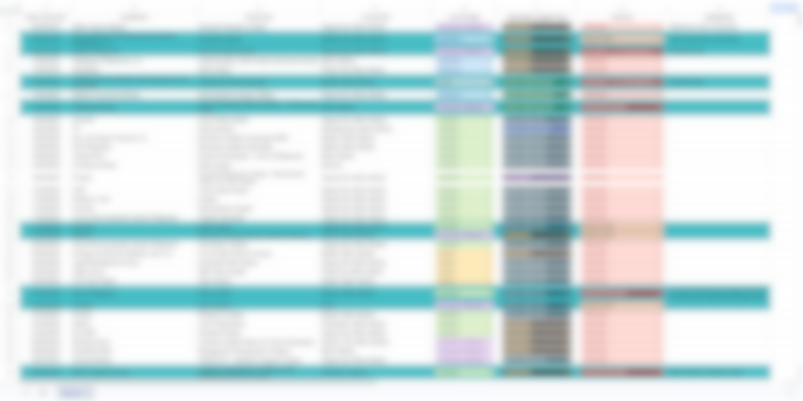
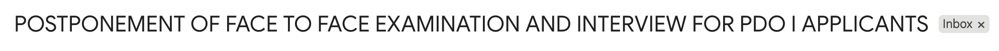
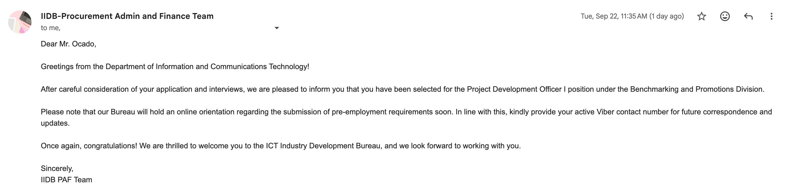

I am a recent Bachelor of Science in Mathematics graduate from Southern Luzon State University. I finished Cum Laude, served as a DOST-SEI JLSS scholar, and passed my Career Service Professional exam (93.99% rating) during my third year of college. Naturally, looking at paper, I thought to myself:
“Finding a job is going to be a breeze.”
I was so wrong.
Graduating with good academic standing doesn’t automatically grant you a VIP pass to the companies you want. It gets your foot in the door, sure, but you are competing against hundreds of people with the exact same standing—or better. I quickly realized that landing a job isn't just about how good your grades are; it’s about how well you can actually stand out in a sea of equally qualified applicants.
The Numbers Game
I started sending out applications a month before my June 23rd graduation. I treated applying like a full-time job. I built a massive spreadsheet to track every submission, creating different versions of my resume tailored to specific fields and job descriptions.
Out of nearly 200 applications, here is what my reality looked like:

Out of those 10 interviews, I voluntarily withdrew from five because the roles ended up being entirely unrelated to my actual career goals (a byproduct of applying to basically everything I was remotely qualified for). For the remaining five, the irony of job hunting really set in.
The three roles I felt incredibly confident about? They ghosted me after the interviews. The two roles I didn't take very seriously and attended just for the practice? They both gave me job offers.
I ended up declining both offers. During my internship at a national government agency, I had become aware of entry-level positions offering ₱30,000+. The private-sector offers I received were around ₱24,300 to ₱25,000. Those were reasonable starting salaries, but I decided to hold out for opportunities that better aligned with my financial expectations and long-term career goals. Whether that was the right decision was something only time would tell.
The Doomscroll That Changed Everything
By early June, I had stopped applying entirely. I figured I had cast a wide enough net and decided to just wait for July to see if anything bit. My days devolved into endless doomscrolling on TikTok and Facebook.
One afternoon, while passively scrolling through a Facebook page dedicated to government job vacancies, a post caught my eye. The Department of Information and Communications Technology (DICT) was looking for a Project Development Officer I. The qualifications perfectly matched my background, and the deadline was literally the next day. I threw my resume into the ring at the last minute and went right back to scrolling.
July arrived, and so did the DICT invitation for an initial interview. I passed, and they scheduled me for an in-person exam and a follow-up interview in late July at their central office.
The 4 AM Commute
Living in Quezon Province, a face-to-face interview in Quezon City meant leaving my house at 4:00 AM. I made the long bus ride, arrived at the DICT office, and sat down to check my phone.
There was an email sitting in my inbox, sent at 8:00 AM while I was on the highway. The in-person exam and interview had been postponed and shifted to an online format. Since I was already physically standing in their office, miles away from home, they gracefully allowed me to take the exam and do the interview right then and there.

I aced it. The interviewer specifically noted that my biggest edge over the other candidates was my deep knowledge of their internal programs and initiatives—a subject I had frantically researched and crammed on my phone during the bus ride.
The Final Boss: One Last Interview
HR told me I was in the top three for my batch. I spent the entirety of August waiting in agonizing silence, fully expecting the next email to be a job offer. That silence is actually what motivated me to code this very portfolio—I realized that if I was going to jump back into the job market, I needed an undeniable edge to prove my technical skills.
In early September, the email finally came. But it wasn't an acceptance letter—it was an invitation for a final selection panel. Another interview.
Looking at the calendar invite, I saw there were five of us listed. Since I knew who my original competitors were, I quickly realized none of them were on this list. It dawned on me: there must have been multiple batches, and I was looking at the sole survivors from each one. Naturally, curiosity got the better of me, and I did what no applicant should ever do: I stalked my new competition on LinkedIn.
Looking at the other applicants' professional backgrounds, I immediately started comparing myself to people who seemed exceptionally accomplished. The more I looked, the more I questioned my own qualifications. I had spent months trying to prove that I belonged in the room, only to convince myself otherwise before the final interview even began.
When the scheduled date arrived, only three of us were on the final roster. I didn't know what had happened with the other applicants, but seeing the smaller group made the final interview feel even more intimidating. One candidate was scheduled ahead of me, and I could feel my nerves building as I waited for my turn.
When it was finally my turn to enter the Google Meet, I overheard a brief, positive remark about the previous interview. It was probably nothing unusual, but in my already anxious state, it was enough to make me question my chances before I had even introduced myself.
“Masaya siya, ’no?” (She's fun, right?)
As an introvert, hearing the panel explicitly praise the candidate right before me shattered my remaining nerves. I stuttered. I lost my train of thought. By the time I logged off, I felt completely defeated. I was certain I had lost the job.
Over the next two weeks, I fully pivoted back to the private sector. I started securing interviews with top-tier companies, and my confidence slowly began to repair itself.
Then, on September 22nd, an email popped into my inbox from the DICT. I was selected for the role.
I immediately withdrew all my other ongoing applications. Against the odds, the burnout, and the fierce competition, I had landed my first job.

Epilogue: The 8:30 AM Plot Twist
Just when I thought the job hunt saga was officially closed, I received an unexpected phone call at 8:30 in the morning on October 9th. I had just woken up, my brain was completely offline, and when I heard the voice on the other end, I panicked and faked bad reception just to buy myself time to process what was happening.
It was my former supervisor from my internship at the Department of Budget and Management (DBM).
He had heard about my upcoming role at the DICT and reached out about an opportunity to return to the DBM team. The offer came with a familiar working environment, the chance to continue contributing to projects I had helped develop, and a surprisingly immediate timeline. I genuinely hadn't expected my internship work to open another professional door.
It was the ultimate validation. After months of rejections and impostor syndrome, having a national government agency headhunt me back because they remembered the automation systems and Power BI dashboards I built as an intern felt incredible.
Ultimately, I sent him a very grateful message declining the offer. I realized that since my long-term goal is to transition into the private sector for data and statistics, gaining experience in a purely ICT-driven agency like the DICT is the best strategic stepping stone for me right now. But I didn't leave him empty-handed—I immediately referred a trusted friend from my math program for the vacancy.
My Takeaways for Fellow Fresh Grads
If you are currently in the job-hunting trenches, here is what I learned the hard way:
It will only feed your impostor syndrome. Focus entirely on what you bring to the table.
A degree proves you can study, but a tangible portfolio proves you can execute. Building this site kept me sane during the waiting period and gave me a massive structural advantage.
Researching the company's specific pain points and programs on the bus ride directly won me my technical interview. Always know who you are talking to.
Getting ghosted by the jobs I thought I wanted left the door open for the job I actually needed.
The job hunt is brutal, humbling, and exhausting. But it only takes one “Yes” to make the two hundred “No’s” completely irrelevant. Keep going.
On November 9, 2026, I officially began my first professional role as a Project Development Officer I at the Department of Information and Communications Technology (DICT). After everything that came before it, it felt good to finally turn the page and begin something new.